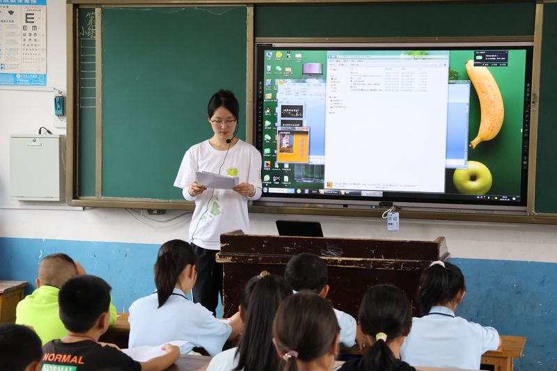
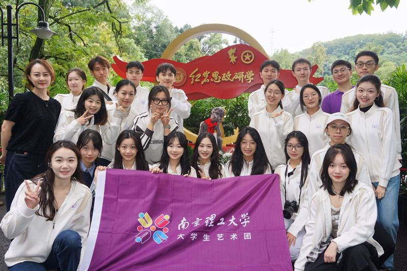
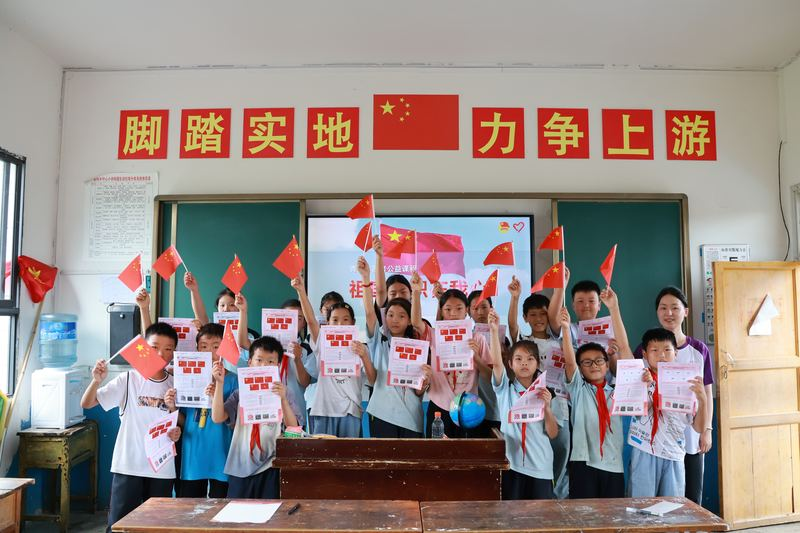
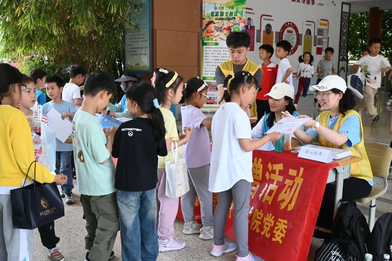
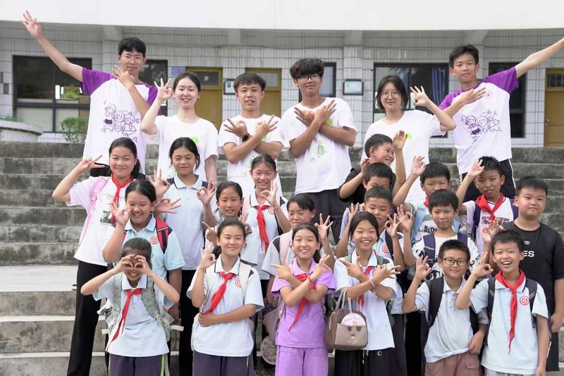
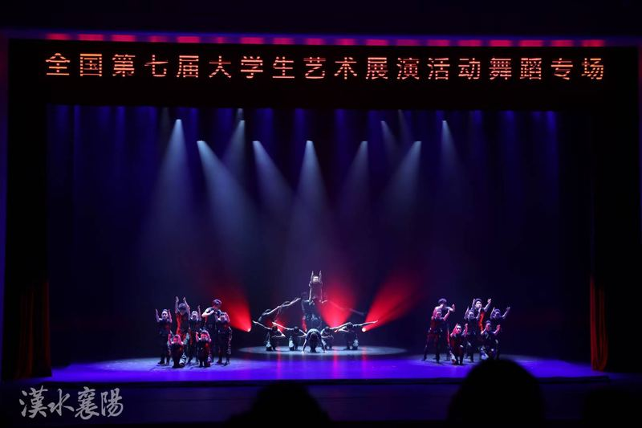

Bio
Hello! I am Xiaohan Meng, an incoming Master's student at the University of Chinese Academy of Sciences (UCAS). I will join the Institute of Information Engineering, Chinese Academy of Sciences (IIE, CAS) in Fall 2027 under the supervision of Prof. Zheng Lin and Prof. Weiping Wang.
I am currently a final-year undergraduate in Computer Science and Technology at the Nanjing University of Science and Technology (NJUST).
Beyond research and work, I dance, teach, and serve: a performer of the national first-prize dance drama Mission, and a volunteer teacher in rural Guizhou.
Education
2027 – (incoming)
News
2026.04
ICIC 2026 OralA training-free scene-adaptive inference bridge that explicitly models the confidence threshold, NMS, proposal budget, and fusion weight of a frozen detector + CLIP bridge as scene-conditional variables. COCO novel-class AP improves from 18.3 to 26.4 (+8.1), Recall@100 +13.1, closed-set AP drops only 0.1, with 1.4 ms control-layer latency.
Honors
Competitions
National Collegiate Curling AI ChallengeNational First Prize (Champion)
Mathematical Contest in Modeling / Interdisciplinary Contest in Modeling (MCM/ICM)Meritorious Winner (M)
iCAN Innovation & Entrepreneurship CompetitionNational First Prize (Innovation Track)
Global Campus AI Algorithm Elite CompetitionNational Second Prize
China Collegiate Computer Design CompetitionNational Second Prize
Asia-Pacific Mathematical Contest in Modeling (APMCM)First Prize
China Undergraduate Mathematical Contest in Modeling (CUMCM)National Second Prize
Honors
First-class Academic Scholarship · Outstanding Student · Outstanding League Member · Outstanding League Cadre
Dean's Medal ("Dedication Star" · "Practice Star" · "Arts & Sports Star") · Outstanding Volunteer · Outstanding Teaching Volunteer
First Prize, National College Art Exhibition · Jiangsu Grand Prize · "Stars Award" Nominee · the only university work selected by the Ministry of Education
Grand Prize, League Cadre Ideological & Political Skills Competition · "Qingyan" Lecturer Team · Outstanding Member of the University Dance Troupe
Three-star Student Union (Vice President) · 6 arts & sports events · 4 career events · 20+ student services
Experience
Community Service
Teacher
Rural Teaching in Zunyi, Guizhou
Taught Grade 5 English and music, directed a large arts gala with 13 programs, and organized a science festival, sports day, and reading salon; raised over 1,000 books.
Lecturer
Jinggangshan Spirit Volunteer Lectures
Led the League branch to join the 2024 National College Lecture Group; delivered nearly 10 talks across colleges and communities, reaching 500+ people.
Vice Pres.
Vice President, College Student Union
Led the Student Union to a three-star rating, organized 5 events covering 600+ students; previously class League Branch Secretary, Grand Prize in the Ideological & Political Skills Competition.
Projects
Intelligent Teaching Assistant Based on Multimodal Knowledge Graph and ReAct AgentUniversity Collaboration
Built a multimodal knowledge graph over multidisciplinary data and developed a ReAct-based teaching agent for the end-to-end generation of course syllabi, lecture notes, and question banks.
Autonomous Visual Recognition and Intelligent Navigation on the VEX-U PlatformNational Research Training
Deployed a lightweight YOLO model on Raspberry Pi for high-frame-rate, real-time semantic understanding of complex dynamic targets; combined SLAM-based visual mapping with Kalman filtering for path planning in dynamic adversarial environments.
Local Intelligent Recipe Assistant on HarmonyOS NEXTHarmonyOS Developer Incentive Program
Independently built 14 modules (ingredient matching, calorie recognition, Jaccard recommendation, daily reminders) and led the full pipeline from requirement analysis and prototyping to app-store release.
Life
Gallery

Rural teaching · Grade 5 head teacher Mission · National College Art Exhibition
Mission · National College Art Exhibition
University Dance Troupe
Teaching in the classroom
1,000+ books donated
Arts gala during teachingVideos

Mission · Personal record
First Prize, National College Art Exhibition · the only university work selected by the Ministry of Education

Summer 2024 · Teaching at Xieba Township Primary School
Rural classroom in Zunyi, Guizhou · arts gala · daily moments